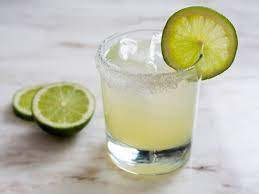
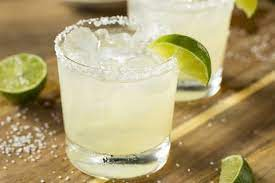

Best Simple Margarita
Here’s the absolute best simple margarita recipe! Serve this drink on the rocks with the classic ingredients: lime, Cointreau and tequila.

Stop right there. Here’s the best margarita recipe you’ll find: zingy, clear, and classic. It’s
simple and uses only 3 ingredients. Many restaurants and pre-made mixes use loads of
sugar, but you won’t miss it here! This classic drink is perfectly tangy and balanced. Make an
individual drink or a pitcher for a night with friends. Here’s how to make the best classic
margarita on the rocks…in just 5 minutes!
What's in a margarita? 3 simple ingredients!
1 ounce Cointreau or Triple Sec

Make a classic margarita on the rocks: 3 simple steps!
Now that we know the ingredients…how to make a margarita? This simple margarita recipe
is “on the rocks,” meaning that it’s served over ice. It’s incredibly easy to make; here’s how!
- Rim the glass with salt. A classic margarita has salt on the rim. Why? The salt enhances
the sweet and sour flavors in the drink.
- Shake in a cocktail shaker. Take that tequila, Cointreau and lime juice and shake it
together in a cocktail shaker with 4 ice cubes.
- Strain into a glass and add ice. Strain the drink into a glass and add ice. What kind of
glass to use for the best margarita? The margarita drink is often served in a lowball or Old Fashioned glass
as you see here, though of course the classic curved margarita glass works too.
Return to main